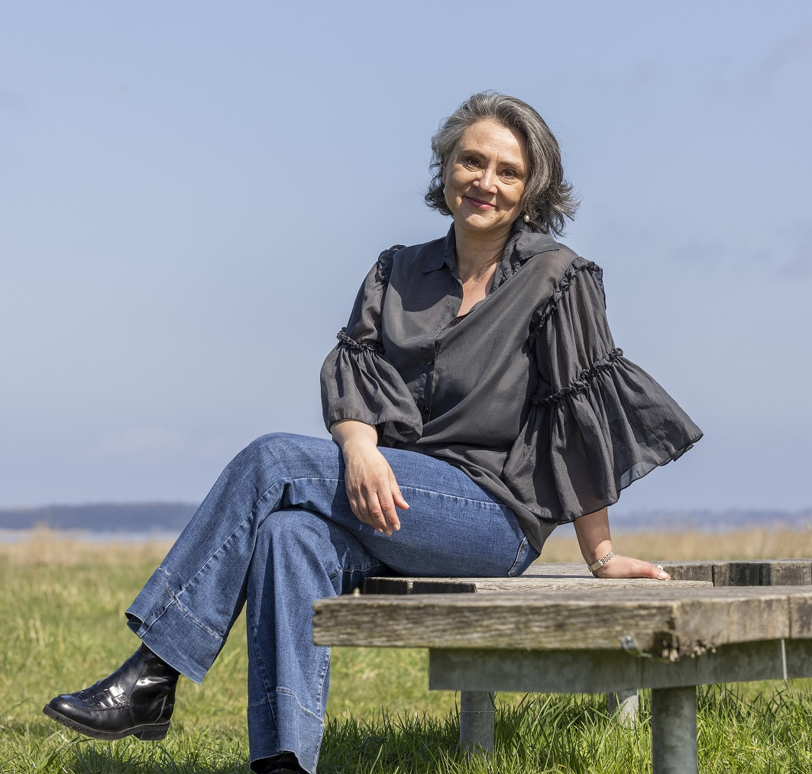

I was born in 1974 in a Christian fundamentalist parallel society. In the midst of great spiritual darkness,
with doubt, fear, abuse and deep sorrow, I have also always found light and joy. My parents were not only
religious but also very creative and they had a great drive to give their children fun experiences. We sailed,
traveled, did art projects, wrote texts and discussed literature over the dinner table, and they gave us the
ability to find fun experiences even though our world felt unbearably tight.
I've always loved exercising and at the age of 8 I invented a way to feel my body, that gave me a sense of
flow and awareness, a way that I later have called physical meditation.
Maybe it's because I'm born clairvoyant, and my soul had a tendency to take off to places outside my body,
leaving me with a strange feeling of emptiness, confusion and anxiety in my body, im not sure, but I do know
that I did everything I could to not have any clairvoyant experiences at all growing up - and yet they were
there all the time.
Because of the religion, I associated clairvoyance with demonism, and fear of being possessed by Satan and
demons made me live with an inner terror and guilt. At the time I'd never heard the word meditation before,
but now I know that what I invented as a child was a physical and emotional way to connect with what I'm now
calling The Third Layer.
At 22, I married a devout and loving man, and although there was a kind of love between us, I knew pretty
quickly that I would die inside if I stayed in the marriage and the faith. Since childhood, fundamentalism had
eaten away at my self-esteem, so it took time to find the courage to leave life as I knew it. At 30, I became
a mother, and here it became crystal clear that I would never be able to let a child grow up in the harsh iron
grip of fundamentalism.
The love for my son gave me the courage to go out into the world. After I left the faith, I went to various
therapists and psychologists, all of whom could… something, but not quite what I needed, and I had many
transcendent experiences that showed me that I should create the path to deep healing. No matter how difficult
my life was after ostracism and massive social control, I had an unwavering belief throughout that I would be
fine. I saw it in my mind, and I felt how living in light would feel. I used my clairvoyant abilities to find
the way forward in all my layers.

There has always been a will of steel within me, and an unwavering belief that I would be okay. Like really
okay. That my traumas would one day transform into experiences on which I could build a loving and fruitful life
- and that's how it is. It has taken courage, strength, perseverance, gentleness, creativity, love and
discipline to get to where I am today. I have learned to use my body to feel flow versus stagnation, and my
clairvoyance to see energy and feel all living.
If you would like to know more, you can look forward to reading the book The Third Layer. At present
time, it is being edited, and I really look forward to sharing the final product when it is ready.
People have always been at the heart of my work—from my roots in the creative media industry to years of teaching, leadership, and coaching. In my company, Det tredje lag (The third layer), I bridge the gap between academic expertise, professional experience, and spiritual practice. This blend allows me to offer a holistic foundation for navigating life's constant transitions. My mission is to support you in living authentically, with strength and joy, in every layer of your being.